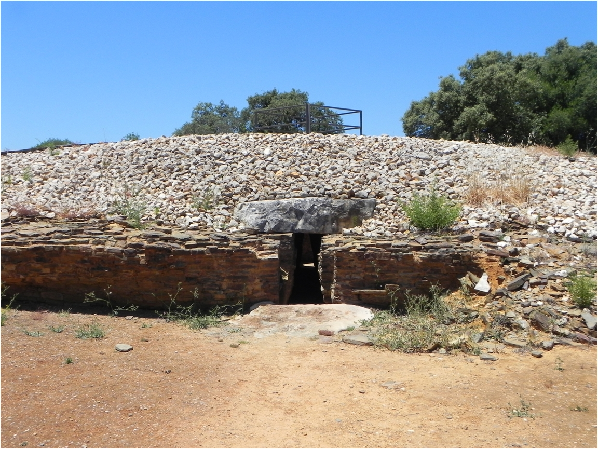
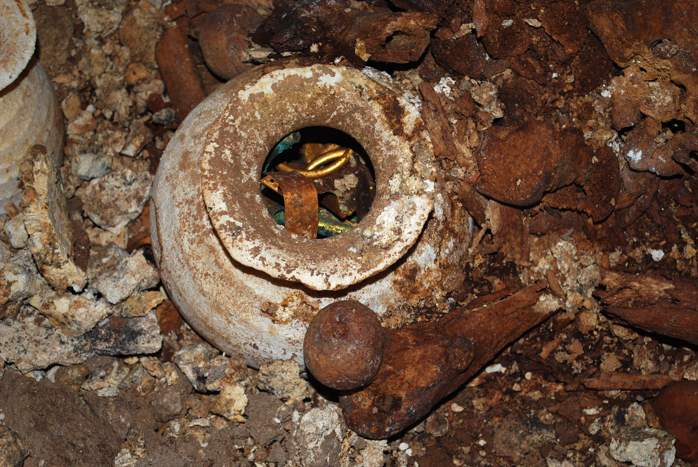

Projektbereich A. Entwicklungen Ressourcen und Prozesse gesellschaftlichen Wandels
A 01 · Ressourcen und die Herausbildung von Ungleichheit. Rohstoffe und Kommunikationssysteme im prähistorischen Südosteuropa
 Das Ziel des Projektes ist es, Veränderungen der Nutzung von anstehenden Ressourcen im
prähistorischen Südosteuropa anhand von zwei Beispielregionen, den Gebieten des Banat
in Südwestrumänien und dem bulgarischen Schwarzmeerraum, zu untersuchen . Die vergleichende Analyse wird
insbesondere soziale Auswirkungen auf die Bevölkerung im
Zusammenhang mit der Ressourcennutzung aufzeigen .
Das Ziel des Projektes ist es, Veränderungen der Nutzung von anstehenden Ressourcen im
prähistorischen Südosteuropa anhand von zwei Beispielregionen, den Gebieten des Banat
in Südwestrumänien und dem bulgarischen Schwarzmeerraum, zu untersuchen . Die vergleichende Analyse wird
insbesondere soziale Auswirkungen auf die Bevölkerung im
Zusammenhang mit der Ressourcennutzung aufzeigen .
A 02 · Viel Erz und wenig Wasser. Sozio-kultureller Wandel in Verbindung mit Ressourcennutzung in der jüngeren Vorgeschichte der iberischen Halbinsel
 In diesem Teilprojekt werden die Dynamiken und die Diversität der sozio-kulturellen Erscheinungsformen auf der iberischen Halbinsel in Relation zur Nutzung von Ressourcen umfassend in einer Langzeitperspektive vom dritten bis ersten Jahrtausend v . Chr . analysiert und rekonstruiert . Durch die geplanten Gegenüberstellungen detaillierter Studien in zwei Regionen mit deutlich verschiedenen Standortbedingungen ergibt sich die Chance Ressourcen als Faktoren in solchen Prozessen wesentlich deutlicher als bisher zu identifizieren .
Mehr lesenA 03 · Steine aus dem Süden. Der Austausch von Ressourcen zwischen Mesopotamien und dem Gebiet des Persischen Golfs
 In dem Teilprojekt soll die Zirkulation von Ressourcen im Bereich
des Persischen Golfes, der vor allem auf den Erhalt wertvoller Steine durch die
mesopotamischen Stadtstaaten und Großreiche des 3 . Jahrtausends v . Chr . abzielte, erforscht werden .
Im Zentrum stehen dabei die Auswirkungen dieser weiträumigen Prozesse auf die Herausbildung von lokalen RessourcenKulturen
in der Golfregion . Zu diesem Zweck wird in Zusammenarbeit mit dem Iranischen Forschungsinstitut für Kulturerbe und
Tourismus (richt) ein archäologischer Survey in der
iranischen Provinz Kerman durchgeführt....
In dem Teilprojekt soll die Zirkulation von Ressourcen im Bereich
des Persischen Golfes, der vor allem auf den Erhalt wertvoller Steine durch die
mesopotamischen Stadtstaaten und Großreiche des 3 . Jahrtausends v . Chr . abzielte, erforscht werden .
Im Zentrum stehen dabei die Auswirkungen dieser weiträumigen Prozesse auf die Herausbildung von lokalen RessourcenKulturen
in der Golfregion . Zu diesem Zweck wird in Zusammenarbeit mit dem Iranischen Forschungsinstitut für Kulturerbe und
Tourismus (richt) ein archäologischer Survey in der
iranischen Provinz Kerman durchgeführt....
A 04 · Die Entwicklung der Palast-RessourcenKulturen Syriens
 Das Teilprojekt zielt darauf ab, das traditionelle Konzept der Palastwirtschaft für die syrischen Klein- und Mittelstaaten des 2 . Jahrtausends v . Chr . durch ein Modell der Palast- RessourcenKulturen zu ersetzen und die Entwicklung dieser Systeme zu erforschen . Dieses neue Konzept stellt die gezielte Belegung von Materialien und Objekten mit kulturellem Symbolgehalt zu Zwecken der Herrschaftsstabilisierung in den Vordergrund . In dem Teilprojekt wird die Bedeutung von Gütern aus wertvollen Materialien in palatialen Kontexten untersucht .
Mehr lesenA 05 · Reis und Heilpflanzen. „Das Land, in dem Milch und Honig fließen“. Entwicklung und Bedeutung von Agrarressourcen im bronze- und eisenzeitlichen Palästina
 Das Teilprojekt soll die landwirtschaftlichen Ressourcen
Palästinas mit Schwerpunkt auf dem Ackerbau durch zwei Fallstudien
erforschen: eine archäobotanische Fallstudie, welche die naturwissenschaftlichen
und ethnologischen Quellen untersuchen wird, und eine biblisch archäologische Fallstudie
zu den archäologischen, historischen und philologischen Quellen . Das Arbeitsprogramm wird dabei
so strukturiert werden, dass eine möglichst enge Kooperation zwischen beiden Fallstudien erzielt werden kann .
Das Teilprojekt soll die landwirtschaftlichen Ressourcen
Palästinas mit Schwerpunkt auf dem Ackerbau durch zwei Fallstudien
erforschen: eine archäobotanische Fallstudie, welche die naturwissenschaftlichen
und ethnologischen Quellen untersuchen wird, und eine biblisch archäologische Fallstudie
zu den archäologischen, historischen und philologischen Quellen . Das Arbeitsprogramm wird dabei
so strukturiert werden, dass eine möglichst enge Kooperation zwischen beiden Fallstudien erzielt werden kann .
A 06 · Politischer Kollaps als Folge ökonomischen Wandels? Ressourcenkontrolle am Übergang von der Bronze- zur Eisenzeit im Ostmittelmeerraum
 Das Teilprojekt betrachtet am Beispiel des Übergangs von der Bronze- zur Eisenzeit
im Ostmittelmeerraum die Frage nach den Wechselwirkungen zwischen sozio-kulturellen Dynamiken
und der Nutzung von Ressourcen . Während der ersten Phase des SFB sollen in einer Fallstudie archäologische
Funde der süd lichen Levante aus dem obengenannten Blickwinkel untersucht werden . In späteren Phasen des SFB werden
weitere Fallstudien das Untersuchungsgebiet ausweiten um zu einem besseren Verständnis der wirtschaftlichen,
politischen und historischen Vorgänge während ....
Das Teilprojekt betrachtet am Beispiel des Übergangs von der Bronze- zur Eisenzeit
im Ostmittelmeerraum die Frage nach den Wechselwirkungen zwischen sozio-kulturellen Dynamiken
und der Nutzung von Ressourcen . Während der ersten Phase des SFB sollen in einer Fallstudie archäologische
Funde der süd lichen Levante aus dem obengenannten Blickwinkel untersucht werden . In späteren Phasen des SFB werden
weitere Fallstudien das Untersuchungsgebiet ausweiten um zu einem besseren Verständnis der wirtschaftlichen,
politischen und historischen Vorgänge während ....